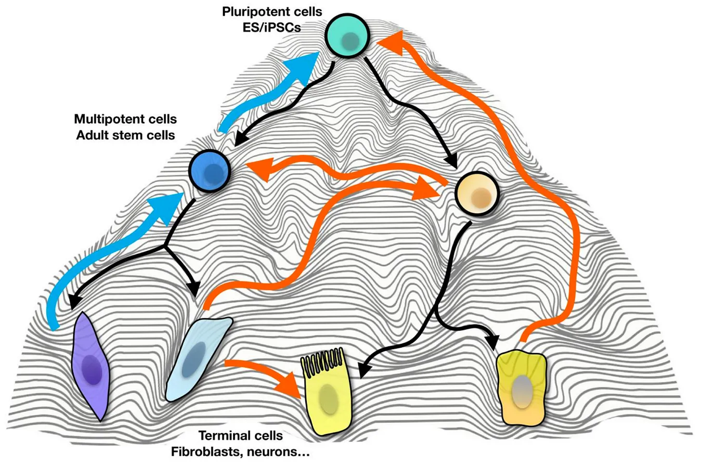

Will Longevity Science Finally Shed Its Snake-Oil Skin?
2026-04-02
I want you to imagine a scenario where you could swallow one pill daily, and with each pill your 40 trillion cells gradually move closer to the state they were in when you were 21. Eventually, after enough weeks, you find that your body and mind are rejuvenated — you are once again your younger, more resilient self, only now you have also retained the wisdom that only decades can produce.
Across human history, tales like this have sat in the realm of grifters and charlatans — those hoping to make a quick buck from the naivety of others. However, research in recent decades means this idea now sits uncomfortably between modern-day snake oil and cutting-edge biology.
Longevity science, still peddled through unregulated supplements on your local subway, has evolved from a fringe curiosity into a well-funded therapeutic field aimed at ageing populations and irreversible disease. Now, for the first time, an anti-ageing gene therapy is moving beyond hype and into human clinical trials.
Life Biosciences, co-founded by the field's poster boy, Harvard Professor David Sinclair, was recently granted FDA clearance to dose patients across the US with its first-in-class asset, ER-100 — a drug intended to rejuvenate damaged neuronal cells in the eye and potentially restore vision in patients with otherwise irreversible blindness.
Will this trial mark the beginning of a new class of credible regenerative therapies, or will longevity science once again fail to shed its snake oil reputation built on overpromised biology and underdelivered results?
Why this trial matters so much
ER-100 is being evaluated as a treatment for two optic neuropathies — conditions defined by the loss of nerve cells that connect the eye to the brain. As a leading cause of blindness globally, they represent both a significant unmet need and potential market opportunity. The eye is also a practical target: few tissues—aside from the CNS and liver—permit drug delivery that can reliably reach retinal ganglion cells (RGCs).
While mature RGCs cannot repair themselves once damaged, leading to progressive and irreversible blindness, younger RGCs retain this capacity. ER-100 is a virally delivered gene therapy encoding three Yamanaka factors, designed to return these cells to a younger state and restore vision.
Grounded in research conducted by Yuancheng Lu, one of Sinclair's PhD students, Life Biosciences has developed a first-in-class partial reprogramming therapy, an approach built on the work of Shinya Yamanaka, who won the 2012 Nobel Prize for showing that four factors—Oct4, Sox2, Klf4, and c-Myc (OSKM)—could reprogramme adult cells into a pluripotent, embryonic-like state — effectively winding back their biological clock.
Partial reprogramming uses a subset of these factors — typically OSK, excluding c-Myc to reduce cancer risk — delivered transiently to rejuvenate DNA methylation and subsequently gene expression patterns in RGCs without erasing cellular identity — hence partial rather than full reprogramming.
There is good reason to believe that this approach may work in patients. Life Biosciences has published data in mice and non-human primate models of optic nerve damage showing that this approach is capable of restoring sight in previously blind animals.

Though the science is certainly interesting, like many advanced therapeutics, it carries significant risks. Too much rejuvenation could push cells all the way back to pluripotency, where they can form teratomas — chaotic tumours that would be catastrophic in the eye.
Striking the right balance between rejuvenation and de-differentiation will have been a central challenge during development and FDA clearance would have required clear evidence of a ‘Goldilocks zone’ — maximising therapeutic benefit while avoiding tumour formation.
Ageing's Poster Boy
David Sinclair has been at the heart of the anti-ageing field for three decades, and he deserves his own section. While he has been rightly or wrongly vilified by many in academia, he has arguably achieved his primary objective: we now talk about treating ageing like a disease. There are now clinical trials hoping to address indications like sarcopenia and menopause that were once thought of as natural inevitabilities.
Sinclair co-founded Sirtris Pharmaceuticals, which focused on using resveratrol—a compound found in red wine—as a treatment for age-related disease. GSK acquired the company and its pipeline for $720 million upfront in 2008, but controversy soon followed.
Teams at Pfizer and Amgen not only failed to replicate the pre-clinical results behind Sirtris' hype, but also found the compounds toxic in mice at doses previously reported as effective.
A series of failed Phase II trials led to GSK abandoning the programme and caused damage to Sinclair's standing in pharma. He subsequently shifted towards the public as a popular science communicator, spending much of the 2010s promoting longevity research through media appearances and his bestselling book Lifespan: Why We Age — and Why We Don't Have To.
He is not a villain — but he has undeniably blurred the line between scientist and salesman in recent years. As one Nature editorial put it: “Anything researchers say in the media must strike a careful balance between science, hope and hype.” Sinclair has often leaned toward the latter.
Whether what he is selling with Life Biosciences holds up will not be clear until at least 2030 when the primary data read out for ER-100 is expected.Why the Hype?
Sinclair is not alone in generating hype. Over the past five years, the longevity field has seen unprecedented institutional backing.
This surge has been driven by several factors: 'moonshot-friendly' capital markets during the pandemic, growing recognition that modern medicine extends lifespan more effectively than healthspan, and ageing populations placing pressure on healthcare systems.
While this has attracted many traditional biotech investors from VC and pharma, it's the investments by the ultra-wealthy, like Sam Altman, Yuri Milner, and Jeff Bezos that stand out. Risking a small amount of wealth for the chance of decades of additional healthy life is, for many, a modern-day analogue of Pascal's wager — a finite bet against an effectively unbounded payoff.
Despite this enthusiasm, the wager has yet to pay off for anyone. Unity Biotechnology, the once high-profile longevity company backed by Bezos and Peter Thiel, serves as the field's most recent reminder that biological plausibility doesn't guarantee clinical success. Unity peaked at a $700m valuation during its 2018 IPO but shut down operations in 2025 after two disappointing clinical trials of its senolytic assets.
Even so, investors continue to spread bets across multiple ventures. Bezos was also an early backer of Altos Labs in 2022 — a biotech that launched with over $3 billion in initial funding, making it the best-funded startup in biotech's history. While still in its infancy, Altos has become the epitome of the longevity moonshot: no IP, but a who's who of cellular reprogramming experts at its helm, including CEO Hal Baron, former CSO of GSK, and four Nobel laureate directors, including Shinya Yamanaka himself—now three, following the death of David Baltimore last year.
The Culture Problem
For all the scientific progress and financial backing, the field still struggles to escape the gravitational pull of its past. Alongside billion-dollar biotech ventures exists a parallel ecosystem of supplement companies and self-proclaimed longevity gurus — and the boundary between the two is frequently blurred.
Bryan Johnson, the tech entrepreneur turned biohacker, reportedly spends around $2 million a year on his “Blueprint” protocol, and has become one of the field's most recognisable figures. His “anti-ageing“ protocol is marketed as data-driven, and in fairness he does publish his own biomarker data regularly; but the framing that any of this constitutes evidence of life extension is precisely the issue this field cannot afford. A protocol followed by one wealthy man is not a clinical trial.
Even senior academics in the field of longevity have contributed to the blur. Following Sirtris, Sinclair co-founded Tally Health, a direct-to-consumer company offering epigenetic age tests and supplements, while publicly promoting compounds like NMN in podcasts and books.
It is telling that epigenetic clocks—one of the field's genuine scientific breakthroughs—have been commercialised in this way before being adopted clinically.
This is where longevity's credibility problem really lies. The same concepts underpinning rigorous science—epigenetic reprogramming, senescence, NAD+ metabolism—are routinely repackaged into narratives that are difficult even for informed readers to parse. Cutting-edge biology is frequently used not to inform, but to sell.
And yet, dismissing the entire field because of this would be a mistake. Many transformative areas of medicine—from immunotherapy to gene editing—passed through similar phases of overpromise before maturing into the disciplines they are today. Longevity science may simply be earlier in that development arc.
With therapies like ER-100 entering human trials, the field is once again being forced into a level of accountability it typically swerves. In the clinic, biology can't be waved away and hype has a way of collapsing under the weight of data.
Will this be a turning point?
For now, the answer remains unclear. But unlike previous attempts by Sirtris and Unity, Life Biosciences' “anti-ageing” therapy is attempting to alter something fundamental by reversing the biology of ageing rather than its downstream effects.
Over the next decade we may see a whole new class of partial reprogrammers emerge, a class able to reset what was once considered immutable. If, however, these trials fail—as many before them have—the consequences will extend beyond individual companies. Another cycle of disappointment would yet again reinforce the perception of sceptics: that ageing is simply too complex and too poorly understood to be meaningfully targeted.
The reality likely sits somewhere in between. Ageing is not a single disease waiting to be cured, but a multifactorial process deeply entrenched in our biology. Progress will almost certainly be incremental, confined initially to those tissues where delivery is feasible and risk is manageable — expect to see treatments targeting the eye, the liver, and the nervous system. The idea of dramatically extending human lifespan, at least in the near term, remains firmly in the realm of speculators and charlatans.
While we might not live to 500 years old, delaying the onset of some age-related disease by a few years, restoring vision in a subset of patients, or improving quality of life in old age would represent a profound achievement.
For a field long defined by the grandest of promises, the most necessary shift is away from the pursuit of immortality and towards the far more tangible goal of healthier ageing.
If longevity science is to shed its snake oil reputation, it will not be through billion-dollar valuations or bestselling books, but through something far less glamorous: reproducible data, carefully run human trials, and therapies that deliver measurable benefit to patients.